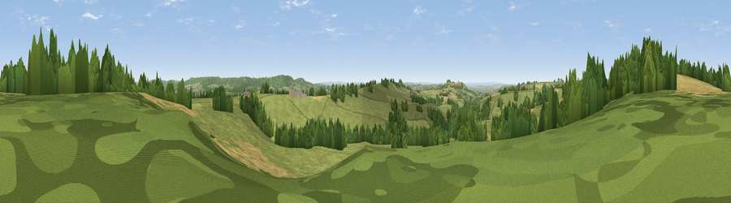

Viewpoint near Upton Noble
#26441 in England · top 52% of its area beats it · near Upton NobleThe view, rendered

A 360° render of this exact spot computed from the terrain model, tree cover and land cover — summer colours, afternoon light, calibrated against photographs of famous viewpoints. Real trees, hedges and buildings will differ in detail.
The panorama
Grey silhouette: terrain skyline in each direction (720 bearings, Earth curvature and refraction included). Dashed green: skyline with trees (+15 m) and buildings (+8 m) as obstacles. Blue strip: how far the ground is visible on each bearing.
Where the view opens
Wedge length = distance to the farthest visible ground on that bearing (vegetation-aware). Rings at 10, 25 and 50 km.
What fills the view
74% grassland · 16% woodland · 11% cropland
Angular shares of the visible panorama (visual magnitude), not map area. Landscape diversity 0.33 (0–1 Shannon).
Key numbers
More beautiful places nearby
The staircase of upgrades: each row has a higher view potential than everything closer. Driving times are estimates from straight-line distance, calibrated against real road routing — check an actual route before setting out.
| Place | Direction | Drive | Score |
|---|---|---|---|
| Dungehill | NW · 1 km | ~3 min | 57.4 |
| Viewpoint near Batcombe | S · 2 km | ~5 min | 60.1 |
| Small Down Knoll | W · 4 km | ~9 min | 66.0 |
| Viewpoint near East Cranmore | NNW · 4 km | ~9 min | 69.2 |
| Viewpoint near Milton Clevedon | SW · 5 km | ~12 min | 73.9 |
| Lamyatt Beacon | SW · 5 km | ~12 min | 74.6 |
| Viewpoint near Lamyatt | SW · 6 km | ~12 min | 77.8 |
| Beacon Batch | NW · 28 km | ~44 min | 79.4 |
51.16051, -2.42359 · source: screening · position refined by local search. Computed location — check access rights before visiting.